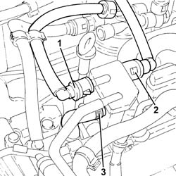
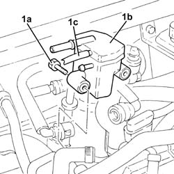
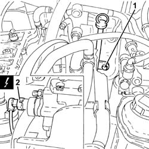
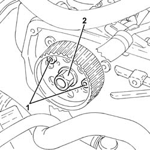
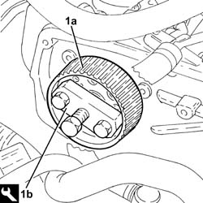
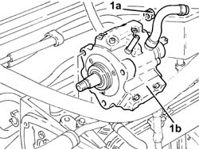
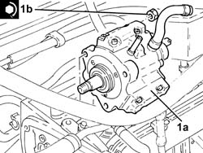
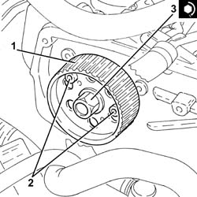

1060E10 PRESSURE PUMP - R R
- Path
- Procedures > 10 ENGINE UNIT > 1060 DIESEL INJECTION SYSTEM > 1060E DIESEL PRESSURE PUMP > 1060E10 PRESSURE PUMP - R R
- Kind
- repair procedure (removal / refitting; the operation number is the code)
- Applies to
- engines: 1.9 JTD 16V; all production periods
- Interactive page
- https://sloeber94.github.io/elrnDB-aGt/en/#/125001033
Applies to: engines: 1.9 JTD 16V; all production periods
 Removing
Removing
 Refitting
RefittingPosition the vehicle on the ramp
Ensure that the ignition key is in the OFF position, then disconnect the negative battery terminal (-).
Name | Connector | |
|---|---|---|
- | Battery | See A1B BATTERY ( BATTERY NEGATIVE ) |
Proceed with removal
Op. 1008C10 POWER UNIT UPPER REACTION LINK R R
Proceed with removal
Proceed with removal
Op. 1060G80 DS ELECTRIC INJECTION CONTROL UNIT - R R
Proceed with removal
Proceed with removal
Op. 4450B04 RIGHT FRONT WHEEL R R
Proceed with removal
Proceed with removal
Op. 7055B54 UNDER-ENGINE GUARD - R R
Proceed with removal
Proceed with removal
Op. 7055B91 RIGHT FRONT WHEEL ARCH LINER - R.R.
Proceed with removal
Proceed with removal
Op. 1092G10 SINGLE ENGINE BELT R R
1. Disconnect the rapid attachment for the fuel return pipe from the fuel filter, return manifold pipe side.
2. Disconnect the rapid attachment for the fuel return pipe to the tank, return manifold pipe side.
Op. 1092A10 CRANKSHAFT SERVICES PULLEY - R.R.
3. Loosen the band and disconnect the fuel return pipe from the pressure pump, fuel return manifold pipe side.
Op. 1092G20 ENGINE COMPONENT SINGLE BELT FIXED TENSIONER - ONE - R + R
Op. 1032D12 TIMING SYSTEM PROTECTIVE COVER(S) - R + R
Op. 1032B10 TOOTHED TIMING BELT - R + R FOR TIMING ADJUSTMENT OR REPLACEMENT
Op. 1060F20 PRESSURE PUMP/MANIFOLD PIPE - R R

Applies to: engines: 1.9 JTD 16V; all production periods
1. Undo the bolts (1a) and remove the fuel return manifold pipe (1b) complete with the pipe from the injectors to the fuel recovery manifold (1c).

Applies to: engines: 1.9 JTD 16V; all production periods
1. Undo the bolt fixing the guide pipe for the engine oil dipstick to the pressure pump mounting.
2. Disconnect the electrical connection from the fuel pressure regulator.
Name | Connector | |
|---|---|---|
2 | Fuel pressure regulator | See N77 FUEL PRESSURE REGULATOR ( CONNECTORS ) |

Applies to: engines: 1.9 JTD 16V; all production periods
1. Stop the pressure pump pulley from rotating using two bolts.
2. Undo the pressure pump pulley nut.
Undo the two bolts fitted previously to stop the rotation of the pressure pump pulley.

Applies to: engines: 1.9 JTD 16V; all production periods
1. Remove the pressure pump pulley (1a) using the tool (1b).
 | Name | Country |
|---|---|---|
1b | Extractor | 1.860.854.001 |

Applies to: engines: 1.9 JTD 16V; all production periods
1. Undo nuts (1a) and remove pressure pump (1b) from its mount.

Applies to: engines: 1.9 JTD 16V; all production periods
Refitting
Removing1. Fit the clutch pump (1a) back in its housing and tighten the nuts (1b) to the specified torque.
 | Fastening | Component | Ø | Value (daNm) |
|---|---|---|---|---|
1b | Nut | PRESSURE PUMP | M8 | (Support side) 2.3 ÷ 2.8 |

Applies to: engines: 1.9 JTD 16V; all production periods
1. Replace the pressure pump pulley in its housing.
2. Stop the pressure pump pulley from rotating using two bolts.
3. Tighten the pressure pump pulley nut to torque.
| Fastening | Component | Ø | Value (daNm) |
|---|---|---|---|---|
3 | Nut | PRESSURE PUMP CONTROL PULLEY | M14 | 4.5 ÷ 5.5 |
Undo the two bolts fitted previously to stop the rotation of the pressure pump pulley.

Applies to: engines: 1.9 JTD 16V; all production periods
Connect the electrical connection to the fuel pressure regulator.
Tighten the bolt fixing the engine oil dipstick guide pipe to the pressure pump mounting.
Place the fuel return manifold pipe complete with the pipe from the injectors to the fuel recovery manifold back in its housing and secure it using the bolts.
Connect the fuel return pipe to the pressure pump, fuel return manifold pipe side and tighten the band.
Connect the rapid attachment for the fuel return pipe to the tank, fuel return manifold pipe side.
Connect the rapid attachment for the fuel return pipe from the fuel filter, return manifold pipe side.
Proceed with refitting
Op. 1060F20 PRESSURE PUMP/MANIFOLD PIPE - R R.
Proceed with refitting
Op. 1032B10 TOOTHED TIMING BELT - R + R FOR TIMING ADJUSTMENT OR REPLACEMENT.
Proceed with refitting
Op. 1032D12 TIMING SYSTEM PROTECTIVE COVER(S) - R + R.
Proceed with refitting
Op. 1092G20 ENGINE COMPONENT SINGLE BELT FIXED TENSIONER - ONE - R + R.
Proceed with refitting
Op. 1092A10 CRANKSHAFT SERVICES PULLEY - R.R..
Proceed with refitting
Op. 1092G10 SINGLE ENGINE BELT R R.
Proceed with refitting
Op. 7055B91 RIGHT FRONT WHEEL ARCH LINER - R.R..
Proceed with refitting
Op. 7055B54 UNDER-ENGINE GUARD - R R.
Proceed with refitting
Op. 4450B04 RIGHT FRONT WHEEL R R.
Proceed with refitting
Op. 1060G80 DS ELECTRIC INJECTION CONTROL UNIT - R R.
Proceed with refitting
Op. 1008C10 POWER UNIT UPPER REACTION LINK R R.
Connect the negative (-) battery terminal
Remove the car from the ramps.
Topics linked from this page (11)
- 1008C10 POWER UNIT UPPER REACTION LINK R R
- 1032B10 TOOTHED TIMING BELT - R + R FOR TIMING ADJUSTMENT OR REPLACEMENT
- 1032D12 TIMING SYSTEM PROTECTIVE COVER(S) - R + R
- 1060F20 PRESSURE PUMP/MANIFOLD PIPE - R R
- 1060G80 DS ELECTRIC INJECTION CONTROL UNIT - R R
- 1092A10 CRANKSHAFT SERVICES PULLEY - R.R.
- 1092G10 SINGLE ENGINE BELT R R
- 1092G20 ENGINE COMPONENT SINGLE BELT FIXED TENSIONER - ONE - R + R
- 4450B04 RIGHT FRONT WHEEL R R
- 7055B54 UNDER-ENGINE GUARD - R R
- 7055B91 RIGHT FRONT WHEEL ARCH LINER - R.R.